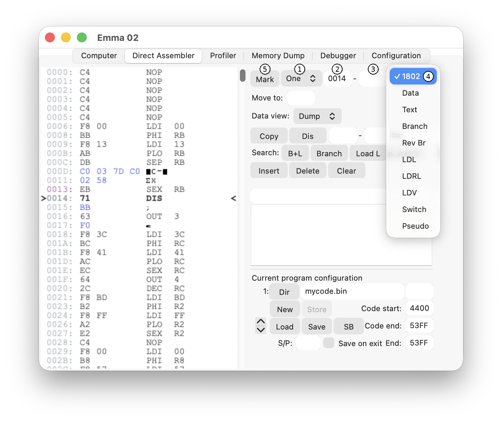

Emma 02 will automatically set the correct memory type as long as the code has been executed since the emulator was started. Therefore, to view disassembled code, make sure the code has been executed first.
To change the type manually, use the marking interface shown below:

Follow these steps:
One or Range (1) depending on whether one location or a range of locations need to be changed.Range was selected.
In the example above, pressing Mark will mark address 0014 as 1802 code, which is already its current type and results in no change.
To save type information, see the Program Configuration section.
The following type choices are available:
1802: SYSTEM00, RCA CDP1801, CDP1802, CDP1804, or CDP1805 codeData: data valuesText: ASCII textBranch: 16 bit branch address (order: high byte - low byte), see Branch DataRev Br: 16 bit branch address (order: low byte - high byte), see Reversed Branch DataLDL: LDL macro, see LDL, LDRL, LDV, and RLDL InstructionsLDRL: LDRL macro, see LDL, LDRL, LDV, and RLDL InstructionsLDV: LDV macro, see LDL, LDRL, LDV, and RLDL InstructionsSwitch: Switch to another mnemonic, see Switch MnemonicPseudo: Pseudo-code, see Pseudo Code